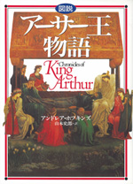

内容紹介
はるか古代から語り継がれたきた＜アーサー王伝説＞は、神話の宝庫ケルト文化の影響をうけ、あでやかな中世の宮廷愛に彩られて豊かな物語に熟成していった。その神話と冒険に満ちた世界が、美しい図版とともに読みやすく、魅力あふれるストーリーに構成された、「アーサー王物語」の決定版！
書籍情報
| 書名 | 図説アーサー王物語 |
|---|
| 著者 | アンドレア・ホプキンズ |
|---|
| 訳者 | 山本史郎 |
|---|
| ISBN | 4-562-02668-5 |
|---|
| 判型 | A5変型判上製 |
|---|
| ページ数 | 352頁 |
|---|
| 定価 | 本体3107円+税 |
|---|
| 刊行 | 1995/5/1刊 |
|---|
《アマゾンで購入》